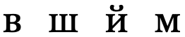
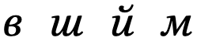
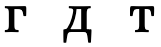
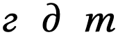
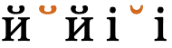
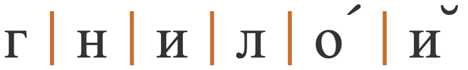
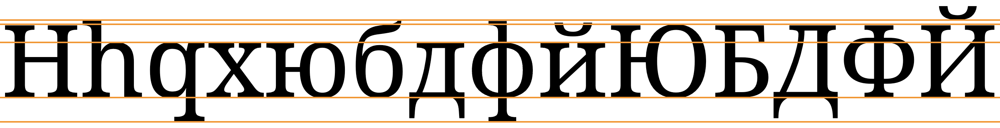
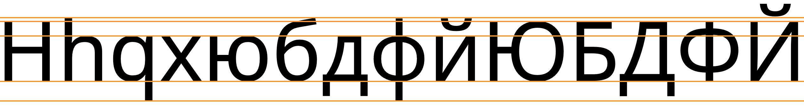
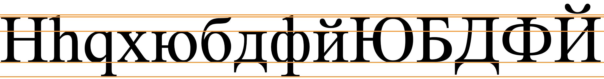
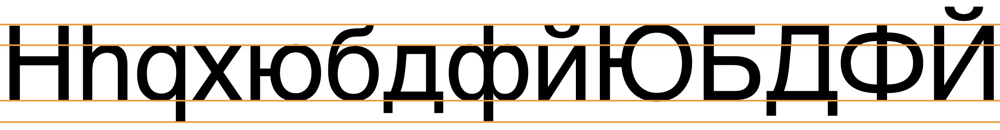

This page brings together basic information about the Cyrillic script and its use for the Russian language. It aims to provide a brief, descriptive summary of the modern, printed orthography and typographic features, and to advise how to write Russian using Unicode.
Select part of this sample text to show a list of characters, with links to more details. Source
Change size: 24px
Статья 1 Все люди рождаются свободными и равными в своем достоинстве и правах. Они наделены разумом и совестью и должны поступать в отношении друг друга в духе братства.
Статья 2 Каждый человек должен обладать всеми правами и всеми свободами, провозглашенными настоящей Декларацией, без какого бы то ни было различия, как-то в отношении расы, цвета кожи, пола, языка, религии, политических или иных убеждений, национального или социального происхождения, имущественного, сословного или иного положения. Кроме того, не должно проводиться никакого различия на основе политического, правового или международного статуса страны или территории, к которой человек принадлежит, независимо от того, является ли эта территория независимой, подопечной, несамоуправляющейся или как-либо иначе ограниченной в своем суверенитете.
Usage & history
The Cyrillic script has traditionally been used for writing the Slavic languages, of which Russian is the most widely spoken. During the nineteenth and twentieth centuries, particularly under Soviet rule, it was extended to write over 50 languages throughout Eastern Europe and Asia. With the accession of Bulgaria to the European Union on 1 January 2007, Cyrillic became the third official script of the European Union, As of 2011, around 252 million people in Eurasia use it as the official alphabet for their national languages, with Russia accounting for about half of them.
The script is named in honor of the two Byzantine brothers, Saints Cyril and Methodius, who created the earlier Glagolitic alphabet. Modern scholars believe that Cyrillic was developed and formalized by early disciples of Cyril and Methodius.
Cyrillic is derived from the Greek uncial script, augmented by letters from the older Glagolitic alphabet, including some ligatures. These additional letters were used for Old Church Slavonic sounds not found in Greek, and the Cyrillic script was initially used for writing Old Church Slavonic (also called Old Bulgarian), The script has changed over the intervening centuries to the point that Old Church Slavonic is sometimes considered a separate script.
An orthographic reform implemented by the Russian tsar Peter the Great in 1708 removed a number of obsolete letters to make Russian writing highly phonetic.
Cyrillic is an alphabet. Letters typically represent a consonant or vowel sound. See the table to the right for a brief overview of features for the modern Russian language.
Of the 441 characters in the Unicode Cyrillic blocks, 177 are historic (33%) and 2 are for Lithuanian dialectology. The remaining 262 are just letters – no punctuation, digits, or combining characters. These are all bicameral, which brings the number of distinct modern letters to 131. Although modern Cyrillic text tends to use precomposed forms, rather than combining diacritics separately with base letters, many extended characters are formed by slightly tweaking a set of basic shapes.
Russian text runs left-to-right in horizontal lines. Words are separated by spaces. The visual forms of letters don't usually interact.
The script is bicameral. The shapes of the upper and lowercase forms are typically the same. There can be a significant difference, however, between regular and cursive/italic shapes for the same character.
This orthography is an alphabet, where vowels are written using 10 dedicated vowel letters, half of which usually indicate palatalisation of the previous consonant. They may, however, sometimes be used after one of the few consonants that is always hard, and е [U+0435 CYRILLIC SMALL LETTER IE] is commonly used after non-palatalised consonants in loan words.
There are no special mechanisms to represent standalone vowels. Combining marks are normally not used, and only occur in decomposed text.
Numbers use ASCII digits.
The visual forms of letters don't usually interact.
Click on the sounds to reveal locations in this document where they are mentioned.
Phones in a lighter colour are non-native or allophones. Source Wikipedia.
Vowel sounds
Plain vowels
Diphthongs
Russian diphthongs all end in the sound i̯, however they can be analysed either as diphthongs or as vowels followed by j.wp Here, for simplicity, we will take the latter line.
Consonant sounds
labial
dental
alveolar
post-
alveolar
retroflex
palatal
velar
stops
pb
td
kɡ
palatalised
pʲbʲ
tʲdʲ
kʲɡʲ
affricates
t͡s
t͡ɕ
palatalised
t͡sʲ
fricatives
fv
sz
ɕːʑː
ʂʐ
xɣ
palatalised
fʲvʲ
sʲzʲ
xʲ
nasals
m
n
palatalised
mʲ
nʲ
approximants
ɫ
j
palatalised
lʲ
trills/flaps
r
palatalised
rʲ
Tone
Russian is not a tonal language.
Structure
tbd
Alphabet
Click on the characters to find where they are mentioned in this page.
The Russian alphabet has 31 letters. CLDR§ lists the following 'index' characters. Each has upper and lowercase forms; shown above and below, respectively.
The following table summarises the main vowel to character assigments.
Vowels preceded by ʲ cause the preceding consonant to be palatalised. Where 2 transcriptions are given for a symbol they show stressed and unstressed pronunciations. Diphones typically occur for standalone vowel sounds. The bottom row shows the glides/semivowels used to make diphthongs.
Standard Russian uses 10 basic vowel letters (20 characters), and one other letter is used for glides in diphthongs.
This set of plain vowels is normally used after a 'hard' consonant (ie. one that isn't palatalised).
ы␣у␣о␣э␣аЫ␣У␣О␣Э␣А
The other vowels usually indicate a preceding palatalized (soft) consonant and with the exception of и [U+0438 CYRILLIC SMALL LETTER I] are iotated (pronounced with a preceding j) when written at the beginning of a word or following another vowel.
However, they may (and particularly е [U+0435 CYRILLIC SMALL LETTER IE] in words of foreign origin) sometimes also be used after non-palatalised consonants.wa,#Vowels
и␣ю␣е␣ё␣яИ␣Ю␣Е␣Ё␣Я
The phonetic sound of the letters varies, particularly between stressed and unstressed vowels (where, for example, о [U+043E CYRILLIC SMALL LETTER O], pronounced o in stressed syllables, is pronounced ʌ or ə). There may also be differences due to the context in which the vowel appears. Click on each letter above for more details, see vowelMappings, or see Wikipedia for much more information.
The semivowel is regarded as a consonant, but is mainly used to create diphthongs, eg.
ино́йприйти́
Diacritics
́␣̈␣̆
́ [U+0301 COMBINING ACUTE ACCENT] is used to indicate where the stress falls in a word for educational materials, dictionaries, and such. The position of the stress is distinctive, and not always predictable, eg. compare
за́мокзамо́к
Rarely, it may be used to specify the stress in uncommon foreign words and in poems with unusual stress used to fit the meter.wa,#Diacritics We use it here for most of the examples.
All 55 of the other combining characters in the Unicode Cyrillic blocks fall under the historical category.
Letter to sound mappings
Given the tendency to alter vowel quality for all vowels in a word other than the one that is stressed, plus the effects of palatalisation, the mapping of letters to actual sounds is somewhat complicated (and in some cases controversial). The following table comes from Wikipedia.wp
Phoneme
Letter
(typically)
Position
Stressed
Reduced
i
и
(Cʲ)V
i
ɪ
ыи
CV
ɨ
u
у
(C)V
u
ʊ
(C)VCʲ
ю
CʲV
ʉ
e
э
VC
ɛ
ɪ
е
CʲV
e
э, е†
CVC
ɛ
ɨ
CVCʲ
e
o
о
(C)V
o
ə, ʌ
(C)VCʲ
ɵ
ё*
CʲV
ɪ
a
а
(C)V
ä
ə, ʌ
(C)VCʲ
я
CʲV
æ
ɪ
* Reduced ⟨ё⟩ is written as ⟨е⟩.
† ⟨е⟩ is used in most loans (except if word-initial) or after ц, ш, ж.
Obsolete Russian vowels
Peter the Great's reform led to the abandonment of these vowel characters.w
Ѫѫ␣Ѧѧ␣Ѭѭ␣Ѩѩ
The Russian orthographic reform of 1918 dropped the following additional vowel letters from the Russian repertoire.w
Іі␣Ѣѣ
Standalone vowels
Standalone vowels are written using ordinary vowel letters and no special arrangements.
оди́н
Vowel absence
No special mechanism.
Vowel sounds to characters
This section maps Russian vowel sounds to common graphemes in the Cyrillic orthography. Click on a grapheme to find other mentions on this page (links appear at the bottom of the page). Click on the character name to see examples and for detailed descriptions of the character(s) shown.
Most of the consonants can be pronounced with or without palatisation, ie. 'hard' or 'soft', respectively. In principle, this is determines which vowel follows it. Palatalised consonants are generally followed by these vowels: я ё е ю и. The other vowels, а о э у ы, follow hard sounds. See also signs.
The following consonant sounds are always hard:
ж␣ш␣ц
These are always soft:
щ␣ч
Palatalisation is phonemically significant, eg. compare братьбрат
Hard and soft signs
ъ␣ьЪ␣Ь
The hard sign slightly separates a non-palatised consonant sound from a following iotated vowel. In modern Russian it is mostly used to separate a prefix from a root.w
The soft sign can be used in two ways.
In most positions it indicates that the preceding consonant is palatalized. Any following vowel is iotated. It is phonemically significant, eg.
червькольну́ть
After root-final consonants ч щ (always soft) or ж ш ц (always hard), the soft sign doesn't alter pronunciation but has a grammatical meaning,wa,#Non-vocalized_letters eg. compare тушьтуш
Prior to the 1918 reforms, every word ending in a consonant had to be followed by a hard or soft sign. That is no longer the case, and the hard sign is now the least common letter in the Russian alphabet.wa,#Frequency
Devoiced finals
Voiced plosive and fricative consonants are devoiced word-finally unless the next word begins with a voiced obstruent,wp,#Final_devoicing eg.
шокола́дсупру́г
Obsolete Russian consonants
Around 1750, after Peter the Great's orthographic reform, the following consonants fell into disuse in Russian.w
Ѕѕ␣Ѯѯ␣Ѱѱ
After the subsequent orthographic reform of 1918, the following additional consonants were removed from the Russian repertoirew, although you can still find them used in Church Slavonic and some other languages.
Ѳѳ␣Ѵѵ
Onsets
tbd
Finals
tbd
Consonant clusters
No special mechanisms.
фрукт
Consonant length
tbd
Consonant sounds to characters
This section maps Russian consonant sounds to common graphemes in the Cyrillic orthography. Click on a grapheme to find other mentions on this page (links appear at the bottom of the page). Click on the character name to see examples and for detailed descriptions of the character(s) shown.
Sounds listed as 'infrequent' are allophones, or sounds used for foreign words, etc.
Cyrillic doesn't normally have any of the changeability of complex scripts. Characters are typically separate and self-contained. However, there can be a significant difference in shape between regular and italic/cursive font shapes for the same character.


Conservative transformations between regular and italic.


More radical transformations between regular and italic.
Note in particular the italic form of т in the figure just above, which looks similar to the italic form of м shown in the previous figure.
The shapes of the italic forms can also vary by language.w
The shape of the breve sign in Cyrillic is different from that used for Latin text.s A font such as Brill can detect the appropriate shape from the adjacent characters.

̆ [U+0306 COMBINING BREVE] between cyrillic and latin characters changes shape in the Brill font.
Case & transforms
Russian is bicameral, and applications may need to enable transforms to allow the user to switch between cases.
Graphemes
Russian graphemes are straightforward, and can be mapped to Unicode grapheme clusters.
Grapheme clusters
Base (Combining_mark)*
The 2 combining marks that occur in Russian appear only on the rare occasions when the text is decomposed, and only one combining mark at a time appears after any base. The same is true of the acute accent that is often used to indicate stress in educational text. All such decompositions conform to Unicode grapheme clusters.
Click on the text version of this word to see more detail about the composition.
гнило́й

(decomposed)
Punctuation & inline features
Word boundaries
Words are separated by spaces.
Phrase & section boundaries
,␣;␣:␣.␣?␣!
Cyrillic uses ASCII punctuation.
phrase
, [U+002C COMMA]
; [U+003B SEMICOLON]
: [U+003A COLON]
sentence
. [U+002E FULL STOP]
? [U+003F QUESTION MARK]
! [U+0021 EXCLAMATION MARK]
Bracketed text
(␣)
Russian commonly uses ASCII parentheses to insert parenthetical information into text.
start
end
standard
( [U+0028 LEFT PARENTHESIS]
) [U+0029 RIGHT PARENTHESIS]
Quotations & citations
«␣»␣„␣“
The standard approach is to use angle brackets by default, and the quotation marks for nested quotes.
Although most sources recommend the use of different quote marks for embedded quotes, Russian rules also allow use of the same quotation marks, and if inner and outer quotation marks fall together, then one of them should be omitted.wq,#Belarusian,_Russian,_and_Ukrainian
Пушкин писал Дельвигу: «Жду „Цыганов“ и тотчас тисну».
Russian quotation marks.
For dialogue, the quotation dash is commonly used to introduce the spoken text, but also to terminate it before identifying the speaker. fig_quote_dashes uses — [U+2014 EM DASH] with spaces around it for this.wq,#Belarusian,_Russian,_and_Ukrainian
— Кто там?
— Это я, почтальон Печкин, — последовал ответ. — Принёс заметку про вашего мальчика.
Quotation dashes used in Russian dialogue.
Other punctuation
CLDR lists the following additional punctuation marks.
§␣‐␣–␣…
Line & paragraph layout
Line breaking & hyphenation
Spaces between words provide the primary line break opportunities.u
Line-edge rules
As in almost all writing systems, certain punctuation characters should not appear at the end or the start of a line. The Unicode line-break properties help applications decide whether a character should appear at the start or end of a line.
The following list gives examples of typical behaviours for some of the characters used in Russian. Context may affect the behaviour of some of these and other characters.
Click/tap on the characters to show what they are.
« „ ( should not be the last character on a line.
» “ ) . , ; ! ? % should not begin a new line.
Text alignment & justification
Justification is done, principally, by adjusting the space between words.
Baselines, line height, etc.
Cyrillic uses the so-called 'alphabetic' baseline, which is the same as for Latin and many other scripts.
Cyrillic has little in the way of ascenders and descenders, and mostly the font metrics are the same as for ASCII text. One difference is the use of a couple of diacritics, which rise above the ASCII ascender height in capital letters..
To give an approximate idea, fig_baselines compares Latin and Cyrillic glyphs from Noto fonts.


Font metrics for Latin text compared with Cyrillic glyphs in the Noto Serif (top) and Noto Sans (bottom) fonts.
fig_baselines_other shows similar comparisons for the Doulos SIL and Helvetica fonts.


Latin font metrics compared with Cyrillic glyphs in the Doulos SIL (top) and Helvetica (bottom) fonts.
Counters, lists, etc.
You can experiment with counter styles using the Counter styles converter. Patterns for using these styles in CSS can be found in Ready-made Counter Styles, and we use the names of those patterns here to refer to the various styles.
The modern Russian orthography uses 4 alphabetic styles, besides the ASCII decimal numeric style.
Alphabetic
The lower-russian alphabetic style uses these letters.